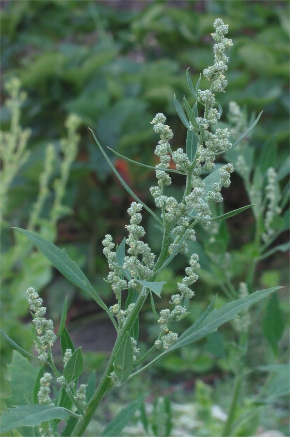

बथुआBathua
Chenopodium album · Amanthaceae · FLR-0073

- Scientific name
- Chenopodium album L.
- Family
- Amanthaceae
- Hindi
- बथुआ
- Status here
- native
- IUCN
- not evaluated
When to look कब देखें
Expected mainly in January, February, March, October, November, December.
बथुआ / Bathua
Chenopodium album L. — Amaranthaceae
बथुआ (बथुआ साग / फैट हेंन / लम्ब्स क्वार्टर) — पूर्वी उत्तर प्रदेश में रबी की फसलों (विशेष रूप से गेहूं, सरसों और आलू) के दौरान नवंबर से फरवरी के बीच उगने वाला सबसे महत्वपूर्ण, स्वादिष्ट और लोकप्रिय शीतकालीन खरपतवार (most beloved winter weed) है। यद्यपि यह फसलों के साथ पोषक तत्वों के लिए प्रतिस्पर्धा करता है, लेकिन इसे एक खरपतवार के बजाय एक अत्यंत गुणकारी हरी पत्तेदार सब्जी के रूप में देखा और खाया जाता है। बथुआ के पत्तों को लहसुन और हरी मिर्च के साथ छौंककर भुजी बनाई जाती है, दाल में डालकर 'बथुआ वाली दाल' पकाई जाती है, या दही में मिलाकर बथुए का रायता बनाया जाता है। बथुआ विटामिन ए, विटामिन सी, कैल्शियम, और आयरन से भरपूर होता है, जो सर्दियों में ग्रामीण आबादी के स्वास्थ्य और पोषण को बनाए रखने में महत्वपूर्ण भूमिका निभाता है। इसके पत्तों की बनावट बत्तख के पैर जैसी (goosefoot shape) होती है और इसकी पत्तियों के निचले हिस्से पर एक सफ़ेद पाउडर जैसी परत पाई जाती है।
Quick Identification त्वरित पहचान
| Feature | Description |
|---|---|
| Plant habit | Erect, branched annual herb, growing up to 30–120 cm high, with a ribbed, often purple-streaked green stem |
| Leaves | Goosefoot-shaped (ovate-rhombic or lanceolate) with wavy or coarsely toothed margins |
| Leaf underside | Covered with a whitish, powdery, waxy coating (mealy texture) that repels water droplets |
| Flowers | Tiny (1–2 mm), greenish-white, cup-shaped, arranged in dense, compact spikes at stem tips |
| Seeds | Tiny (1–1.5 mm), circular, smooth, glossy jet-black, released when the dry plant turns brown |
Field tip: Walk inside a winter wheat field in December. Look between the wheat rows for small, upright green plants with goosefoot-shaped leaves. Rub the leaf surface; your fingers will feel a dry, powdery, waxy texture. The stem often has purple-red streaks near the leaf bases.
Morphology आकारिकी
Biometrics (typical measurements of mature plants in the northern Indian plains):
| Measurement | Range |
|---|---|
| Plant height | 30–120 cm |
| Stem diameter | 5–15 mm |
| Leaf length | 3.0–8.0 cm |
| Flower diameter | 1.0–2.0 mm |
| Seed diameter | 1.0–1.5 mm |
| Weight of 1000 seeds | 0.6–0.8 g |
Stem and Branches: The stem is erect, angular, ribbed, and woody at the base in large specimens, often marked with vertical green, red, or purple lines.
Foliage: Simple, alternate leaves. Lower leaves are rhombic-ovate with irregular teeth, while upper leaves are narrower, lanceolate, and entire. The powdery waxy coating helps the leaves survive dry winter winds.
Flowers: Wind-pollinated, bisexual, lacking petals, consisting of five green sepals that curve over the single seed.
Seeds: Glossy black, circular, slightly flattened, with a hard seed coat that allows them to remain dormant in the soil for years.
Associated Species / Interactions संबंधित प्रजातियाँ
- Wind Pollination: The species is primarily wind-pollinated, releasing dry pollen into the winter air.
- Insects: Serves as a host plant for various aphids and the leaf-eating caterpillars of the Beet Armyworm (Spodoptera exigua).
- Livestock: Highly palatable to cows, buffaloes, and goats, which graze on the weed when fields are weeded.
Pests and Diseases कीट और रोग
- Aphids: Green aphids cluster on tender shoots and flower heads in January, sucking sap and stunting growth.
- Downy Mildew: Caused by the fungus Peronospora farinosa, creating yellow patches on the upper leaf surface and grey fungal growth on the underside.
- Leaf Miner Flies: Larvae burrow inside the leaf layers, creating winding white tunnels.
Traditional and Ethnobotanical Use पारंपरिक और नृवंशवनस्पति उपयोग
- Winter Saag Preparation: The young, tender stems and leaves are harvested, boiled, mashed, and sautéed with mustard oil, garlic, and green chillies to make Bathua ka Saag, eaten with maize or wheat flatbreads.
- Nutritional Dal & Rayta: Mashed boiled leaves are mixed with spiced curd to make a cooling digestive rayta, or cooked together with split black gram (urad dal) to make Bathua ki Dal.
- Ayurvedic Blood Purifier: The fresh juice extracted from raw leaves is consumed traditionally in folk medicine as a natural tonic to treat intestinal worms, improve liver function, and purify the blood.
- Natural Soil Fertilizer: During hand-weeding, large amounts of Bathua are composted or plowed directly back into the soil as green manure to enrich the organic nitrogen content.
Expected Locally स्थानीय रूप से अपेक्षित
Not a field record. Written from published accounts for eastern Uttar Pradesh. No confirmed local sighting yet — if you have seen it, that is what the atlas needs.
अभी तक स्थानीय पुष्टि नहीं। यह विवरण प्रकाशित स्रोतों से है, किसी अवलोकन से नहीं।
A highly common and culturally valued winter weed throughout the Basti district, recorded in wheat and mustard fields in the Harraiya, Vikramjot, and Basti blocks. Farmers state that although Bathua is a weed that competes with crops, they rarely discard it during weeding; instead, it is collected in baskets and taken home as a nutritious vegetable, or sold in local weekly village markets (haat) during winter.
Distribution वितरण
Global range: Native to Europe and temperate Asia; now naturalized worldwide as a cosmopolitan weed in all temperate and subtropical zones.
In India: Widespread across all states, particularly abundant in the northern agricultural plains during winter.
In Uttar Pradesh: Abundant state-wide in all agricultural districts.
In Basti district / eastern UP: Common across all farming blocks.
Research Questions शोध प्रश्न
Anyone can investigate these | कोई भी इन प्रश्नों की जाँच कर सकता है
- How many grams of fresh Bathua leaves can be harvested from a 1-meter square area of a wheat field in December? — Record harvest weights.
- Does Bathua grown in organic compost have larger leaves than Bathua growing in chemical-fertilized fields? — Compare leaf dimensions.
- What is the germination rate of Bathua seeds collected in winter after being stored in dry soil for six months? — Conduct germination trials.
- How many insect species visit Bathua flower spikes in a five-minute observation window at noon? — Document flower insects.
- Does the powdery waxy coating on Bathua leaves prevent chemical weedkiller sprays from sticking to them? / क्या बथुआ के पत्तों पर पाया जाने वाला पाउडर जैसा मोमी लेप रासायनिक खरपतवारनाशी (weedkiller) के स्प्रे को उन पर चिपकने से रोकता है? — Conduct water droplet run-off tests.
Similar Species मिलती-जुलती प्रजातियाँ
| Species | How to tell apart | comparison |
|---|---|---|
| Spiny Amaranth (Amaranthus spinosus) | Has sharp spines at leaf bases; leaves are not powdery; fruit is a spiny cluster | कांटे वाली चौलाई — पत्ती के आधार पर कांटे |
| Jungle Amaranth (Amaranthus viridis) | Leaves are smooth, notched at the tip, green without powdery white wax coating | जंगली चौलाई — चिकने पत्ते, पाउडर का अभाव |
| Black Nightshade (Solanum nigrum) | Leaves are thin, simple; flowers are white and star-shaped; fruit is a round black toxic berry | मकोय — सफेद तारे जैसे फूल, काले गोल फल |
Field rule: Erect winter annual herb with goosefoot-shaped leaves covered in white waxy powder, and tiny greenish-white flower spikes at the branch tips, is Bathua.
Taxonomy & Classification वर्गीकरण
Original description. Carl Linnaeus described Bathua as Chenopodium album in 1753 in his Species Plantarum (Vol. 1, p. 219). The type locality was listed as Europe. The genus name Chenopodium is derived from the Greek chen (goose) and podion (little foot), referencing the leaf shape. The specific name album is Latin for white, referring to the mealy white coating on the leaves.
Subspecies. Monotypic — no subspecies are currently recognised in the main index, though many local ecotypes and cytotypes exist.
Family and order placement. Placed in the order Caryophyllales, family Amaranthaceae (amaranth family), subfamily Chenopodioideae.
Phylogenetic notes. Chenopodium album belongs to a complex polyploid complex that displays high genetic variation, phenotypic plasticity, and adaptive tolerance to saline and drought soils.
IUCN status rationale. Not evaluated (NE) by the IUCN Red List. It is an abundant, cosmopolitan weed with a highly secure global population.
Photo Gallery फोटो गैलरी
References संदर्भ
- Linnaeus, C. (1753). Species Plantarum. Laurentii Salvii, Holmiae, Vol. 1, p. 219. [original description]
- Brandis, D. (1906). Indian Trees (includes woody Chenopodium relatives). Archibald Constable & Co., London.
- Kirtikar, K. R. & Basu, B. D. (1935). Indian Medicinal Plants. Vol. III. Lalit Mohan Basu, Allahabad.
- Partap, S., Kumar, A. & Sharma, N. K. (2012). Chenopodium album: An Overview on Multi-utility Herb. Journal of Pharmacognosy and Phytochemistry.
- World Flora Online (2024). Chenopodium album taxon details.
- GBIF Occurrence Data — Chenopodium album, India (2010–2025).
Source file: species/flora/weeds/bathua.md